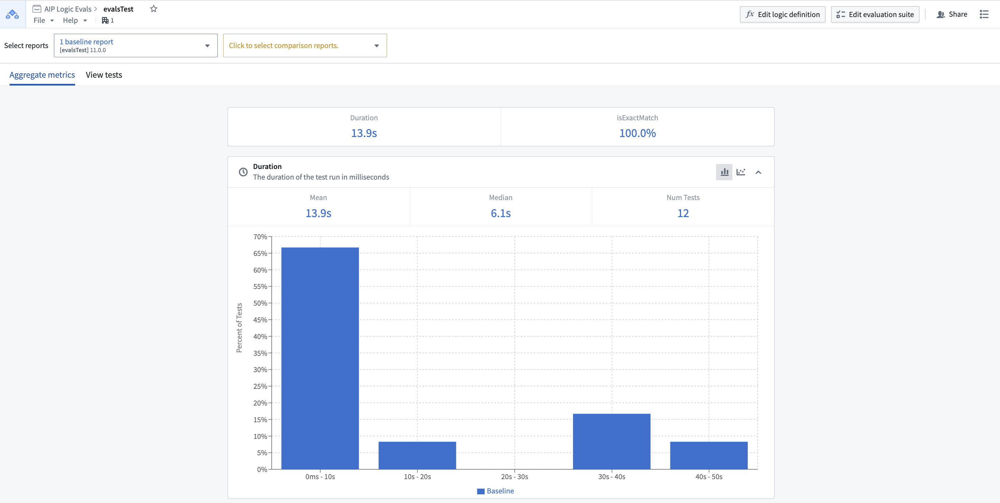
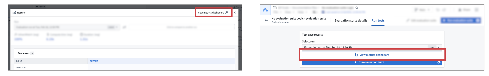
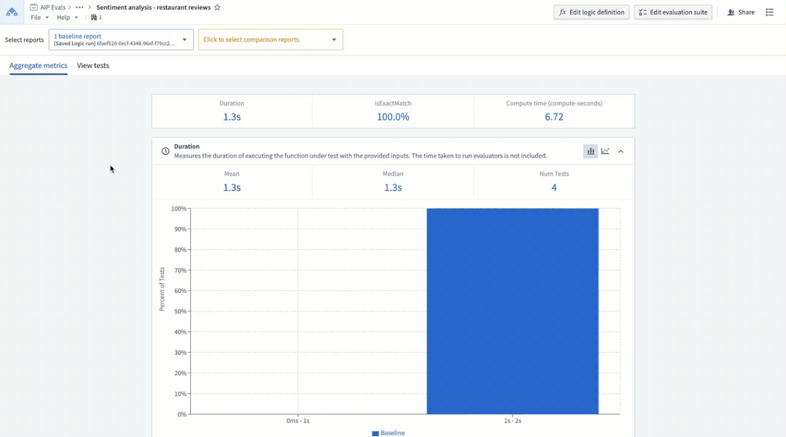

Metrics from evaluation suite runs are collected in reports that can be viewed in the AIP Evals metrics dashboard. Here, you can view charts and statistics or compare aggregate results from evaluation functions and/or results from individual test cases. Note that metric objectives are not supported in the dashboard view.

To access the dashboard select View metrics dashboard in the run results view on the Logic sidebar or the Run tests tab on the evaluation suite page.

For deeper analysis and debugging, you can access the LLM trace viewer. Navigate to the View tests tab and double click into a test case to open the trace viewer. Here, you will be able to view execution information outlining how the function result was computed. If you are using a custom LLM as a judge evaluator, the LLM trace viewer will also include information about the decision-making process of the LLM judge.
